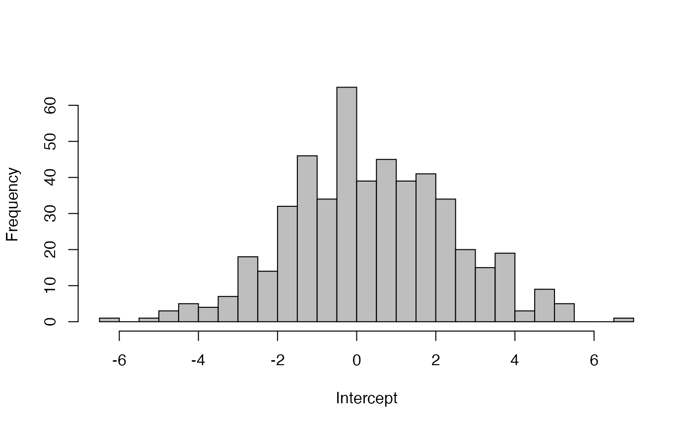

vignettes/fit_stan.Rmd
fit_stan.RmdFor data for this lab, we’ll include a dataset on airquality in New York. We’ll load the data and create a couple new variables for future use. For the majority of our models, we’re going to treat ‘Wind’ as the response variable for our time series models.
data(airquality)
Wind = airquality$Wind # wind speed
Temp = airquality$Temp # air temperatureWe’ll start with the simplest time series model possible: linear regression with only an intercept, so that the predicted values of all observations are the same. There are several ways we can write this equation. First, the predicted values can be written as \(E[{Y}_{t}] = u\). Assuming that the residuals are normally distributed, the model linking our predictions to observed data is written as \[Y = u + e_{t}, e_{t} \sim Normal(0,\sigma)\]
An equivalent way to think about this model is that instead of the residuals as normally distributed with mean zero, we can think of the data \(Y\) as being normally distributed with a mean of the intercept, and the same residual standard deviation: \[Y \sim Normal(E[Y_{t}],\sigma)\] Remember that in linear regression models, the residual error is interpreted as independent and identically distributed observation error.
To run this model using our package, we’ll need to specify the response and predictor variables. The covariate matrix with an intercept only is a matrix of 1s. To double check, you could always look at
x = model.matrix(lm(Temp~1))Fitting the model using our function is done with this code,
x = model.matrix(lm(Nile~1))
lm_intercept = fit_stan(y = as.numeric(Nile), x = rep(1, length(Nile)),
model_name = "regression",mcmc_list=mcmc_list)Coarse summaries of stanfit objects can be examined by typing one of the following
lm_intercept
summary(lm_intercept)But to get more detailed output for each parameter, you have to use the extract() function,
## [1] "beta" "sigma" "pred" "log_lik" "lp__"On your own, try to re-fit a regression model that includes the intercept and a slope, modeling the effect of Wind. What’s the mean wind effect you estimate?
We can then make basic plots or summaries of each of these parameters,
hist(pars$beta, 40, col="grey", xlab="Intercept", main="")
## 2.5% 50% 97.5%
## -3.6529938 0.2426497 4.5384432One of the other useful things we can do is look at the predicted values of our model and overlay the data. The predicted values are pars$pred.
plot(apply(pars$pred, 2, mean), main="Predicted values", lwd=2,
ylab="Wind", ylim= c(min(pars$pred), max(pars$pred)), type="l")
lines(apply(pars$pred, 2, quantile,0.025))
lines(apply(pars$pred, 2, quantile,0.975))
points(Wind, col="red")To illustrate the effects of the burn-in / warmup period, and thinning, we’ll have you re-run the above model, but for just 1 MCMC chain (the default is 3).
Please make a plot of the time series of beta. Based on visual inspection, when does the chain converge? Second, calculate the ACF using acf() - would thinning more be appropriate?
All of the previous three models can be interpreted as observation error models. Switching gears, we can alternatively model error in the state of nature, creating process error models. A simple process error model that many of you may have seen before is the random walk model. In this model, the assumption is that the true state of nature (or latent states) are measured perfectly. Thus, all uncertainty is originating from process variation (for ecological problems, this is often interpreted as environmental variation). For this simple model, we’ll assume that our process of interest (in this case, daily wind speed) exhibits no daily trend, but behaves as a random walk.
\[E[{Y_t}] = Y_{t-1} + e_{t-1}\]
And the \({e}_{t} \sim Normal(0, \sigma)\). Remember back to the autocorrelated model (or MA(1) models) that we assumed that the errors \(e_t\) followed a random walk. In contrast, the AR(1) model assumes that the errors are independent, but that the state of nature follows a random walk. Note also that this model as written doesn’t include a drift term (this can be turned on / off using the est_drift argument).
Please fit the random walk model to the temperature data. Our function can do this by using model_name = ‘rw’. Once you’ve fitted the model, plot the predicted values and 95% CIs, as we did above in the regression model.
rw = fit_stan(y = Temp, est_drift = FALSE, model_name = "rw",mcmc_list=mcmc_list)A variation of the random walk model described previously is the autoregressive time series model of order 1, AR(P=1). This model is essentially the same as the random walk model but it introduces an estimated coefficient, which we’ll call \(\phi\). The parameter \(\phi\) controlls the degree to which the random walk reverts to the mean – when \(\phi\) = 1, the model is identical to the random walk, but at smaller values, the model will revert back to the mean (which in this case is zero). Also, \(\phi\) can take on negative values, which we’ll discuss more in future lectures. The math to describe the AR(P=1) time series model is: \[E[{Y_t}] = \phi * Y_{t-1} + e_{t-1}\].
Our function can fit higher order AR models, but for now we just want you to fit an AR model and make a histogram of phi.
ar1 = fit_stan(y = Temp, x = matrix(1, nrow = length(Temp), ncol = 1),
model_name = "ar", est_drift=FALSE, P = 1,mcmc_list=mcmc_list)To see the effect of this increased flexibility in estimating the autocorrelation, make a plot of the predictions from the AR(P=1) model and the RW model
At this point, we’ve fit models with observation or process error, but we haven’t tried to estimate both simultaneously. We will do so here, and introduce some new notation to describe the process model and observation model. We use the notation \({x_t}\) to denote the latent state or state of nature (which is unobserved) at time \(t\) and \({y_t}\) to denote the observed data. For introductory purposes, we’ll make the process model autoregressive (similar to our AR(1) model),
\[x_{t} = \phi * x_{t-1} + e_{t-1}; e_{t-1} \sim Normal(0,q)\]
For the process model, there are a number of ways to parameterize the first ‘state’, and we’ll talk about this more in the class, but for the sake of this model, we’ll place a vague weakly informative prior on \(x_1\), \(x_1 \sim Normal(0, 0.01)\).Second, we need to construct an observation model linking the estimate unseen states of nature \(x_t\) to the data \(Y_t\). For simplicitly, we’ll assume that the observation errors are indepdendent and identically distributed, with no observation component. Mathematically, this model is \[Y_t \sim Normal(x_t, r)\] In the two above models, we’ll refer to \(q\) as the standard deviation of the process variance and \(r\) as the standard deviation of the observation error variance
For this model, fit the above model with and without the autoregressive parameter \(\phi\) and compare the estimated process and observation error variances. Code examples are given below